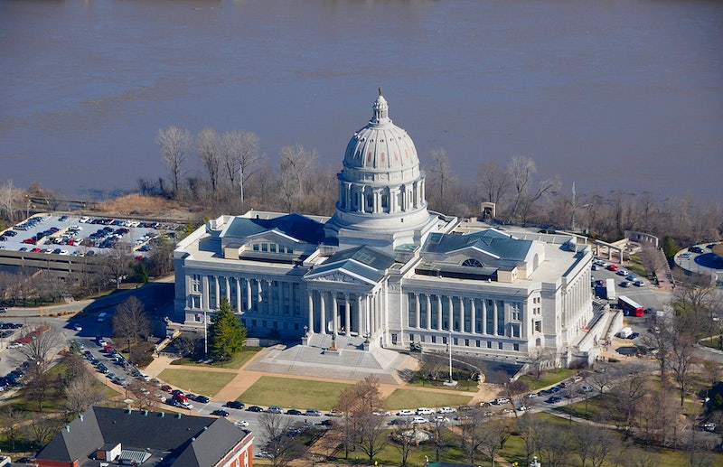

To the right is the Missouri state capitol building. Bellow are some facts about the city.
- City population
- State Capitol: 43,228
- Metro: 149,807
- Year incorporated
- Region the city is located in
- Classification of city
- Average income level of the city compared to state
- City: $56,781
- State: $53,578